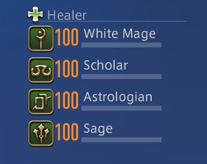
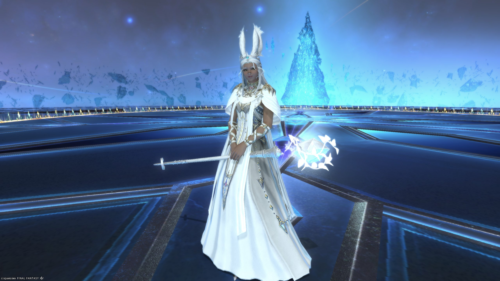
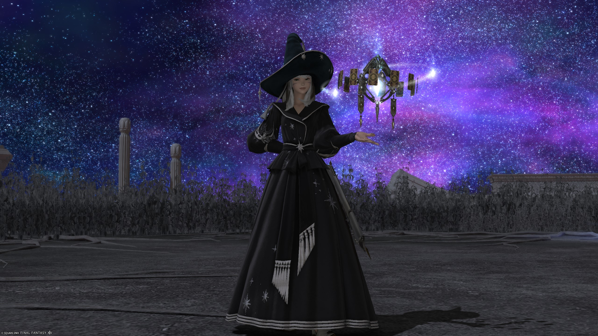

Healers employ restorative magic to heal injured teammates.
They can also reduce incoming damage, cleanse harmful effects, and revive fallen party members.
Currently there are four Healer jobs to choose from:
Sage
White Mage
Astrologian
Scholar

Sage
Sages are magical healers
specializing in barriers to protect the party.
They wield nouliths powered by aether and can enhance their magic temporarily.

White Mage
White Mages draw elemental forces to cast spells, blending offensive and defensive magic.
As Healers, they support parties with restorative and protective abilities.

Astrologian
Astrologians heal and boost allies with Divination,
using Tarot cards for unique buffs ans as Pure Healers they focus solely on restorative magic
Scholar
Scholars are barrier healers who summon faeries to assist in battle,
using their magic and spellbooks to heal and support allies.